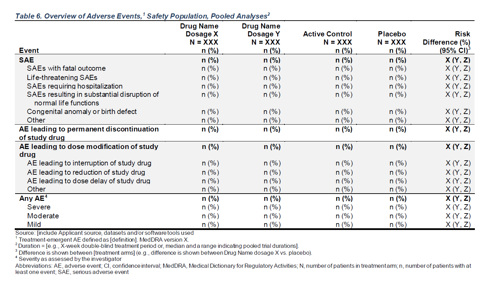

A: Drug X B: Placebo C: Combination
Event (N=134) (N=134) (N=132)
————————————————————————————————————————————————————————————————————————————————————————————————————————————————
SAE 104 (85.2%) 101 (82.1%) 99 (82.5%)
SAEs with fatal outcome 76 (62.3%) 70 (56.9%) 75 (62.5%)
Life-threatening SAEs 9 (7.4%) 13 (10.6%) 19 (15.8%)
SAEs requiring hospitalization 24 (19.7%) 28 (22.8%) 29 (24.2%)
SAEs resulting in substantial disruption of normal life functions 28 (23.0%) 21 (17.1%) 23 (19.2%)
Congenital anomaly or birth defect 26 (21.3%) 27 (22.0%) 20 (16.7%)
Other 30 (24.6%) 37 (30.1%) 32 (26.7%)
AE leading to permanent discontinuation of study drug 27 (22.1%) 26 (21.1%) 30 (25.0%)
AE leading to dose modification of study drug 71 (58.2%) 86 (69.9%) 83 (69.2%)
AE leading to interruption of study drug 4 (3.3%) 4 (3.3%) 3 (2.5%)
AE leading to reduction of study drug 46 (37.7%) 46 (37.4%) 51 (42.5%)
AE leading to dose delay of study drug 20 (16.4%) 28 (22.8%) 30 (25.0%)
Other 34 (27.9%) 48 (39.0%) 46 (38.3%)
Any AE 122 (91.0%) 123 (91.8%) 120 (90.9%)
MILD 7 (5.2%) 9 (6.7%) 4 (3.0%)
MODERATE 24 (17.9%) 24 (17.9%) 23 (17.4%)
SEVERE 91 (67.9%) 90 (67.2%) 93 (70.5%) FDA Table 6
Overview of Adverse Events, Safety Population, Pooled Analyses

make_table_06()
Required variables:
-
adae:SAFFL,USUBJID,TRTEMFL,AESEV,AESER,AESDTH,AESLIFE,AESHOSP,AESDISAB,AESCONG,AESMIE,AEACN, and the variable specified byarm_var. -
alt_counts_df(if specified):SAFFL,USUBJID, and the variable specified byarm_var.
| Argument | Description | Default |
|---|---|---|
adae |
(data.frame) Dataset (typically ADAE) required to build table. |
No default |
alt_counts_df |
(character) Alternative dataset (typically ADSL) used only to calculate column counts. |
NULL |
show_colcounts |
(flag) Whether column counts should be printed. |
TRUE |
arm_var |
(character) Arm variable used to split table into columns. |
"ARM" |
lbl_overall |
(character) If specified, an overall column will be added to the table with the given value as the column label. |
NULL |
prune_0 |
(flag) Whether all-zero rows should be removed from the table. |
FALSE |
annotations |
(named list of character) List of annotations to add to the table. Valid annotation types are title, subtitles, main_footer, and prov_footer. Each name-value pair should use the annotation type as name and the desired string as value. |
NULL |
Source code for this function is available here.